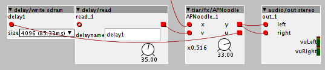

You can open the reverb patch and switch all allpasses to 2pt interpolation to reduce the CPU from 29% to 25%. You could also take out one of the four allpasses in each side (reducing the number of allpasses from 8 to 6). If you are okay with the reverb getting a little more echo-y and less diffuse, you could also reduce the number of allpasses even more, but I wouldn't recommend it.
TheSlowGrowth contributions
TSG/logic/d flipflop
A simple D-flipflop that shifts the data on its input terminal into its memory on the rising edge of the clock input.
axoman
#9
Thanks for these, TSG, I look forward to playing with them cause I'm experimenting with reverb stuff. I'm especially grateful for TSG/math/map, that's going to come in useful for me a lot I think.
Speaking of mapping, just yesterday I noticed the factory filter dials are mapped from 8.176Hz to 13.29kHz, which seems odd to me cause I assumed they'd set the default range as 20Hz to 20kHz. I attempted a basic parametric EQ yesterday and that's when I noticed it. I'll have to start another thread and ask about that cause I'm not sure how I'd create pots that range from 20Hz to 20kHz.
TheSlowGrowth
#10
TSG/fx/tapedelay
A syncable stereo tape-style delay with all the bells and whistles. Need some antialiasing, though (turning the "time" knob creates artifacts)
parameters:
- mix
- tape age
- low end
- saturation
- delay time
- delay time symmetry (offsets the time on the left and right channel)
- sync on/off
- ping-pong amount
- feedback
TheSlowGrowth
#12
I worked around the execution order problems by shifting the objects around a bit. Now the reverb looks completely chaotic, but at least the bias towards the right channel is now gone (I don't hear it anymore, can someone confirm it?)
axoman
#13
I can confirm it's fixed here, I can also confirm awesomeness!
Really nice work you did here, thanks for making it 
TheSlowGrowth
#14
TSG/math/limit
limits an imcoming value to an upper/lower bound set by its attributes. As a companion to the /math/min and /math/max objects
TheSlowGrowth
#15
TSG/patch/modsource auto
A simple modsource that sends its value automatically, whenever it changes. Use this instead of the /logic/change and /patch/modsource combination.
TheSlowGrowth
#16
The tapedelay symmetry setting is now relative to the total delay time.
The reverbs now have parameter smoothing on their predelay and size parameters.
rbrt
#18
Hey friend,we are sailing the same seas!
Check out rbrt/control/t2p and p2t....
I think I didn't document these yet...
TheSlowGrowth
#19
Hi @rbrt, thanks for pointing that out. I remember that I tried all different types of keywords to find this - I literally couldn't believe this wasn't available yet... I must have somehow missed your object.
Great, then I can remove mine!
rbrt
#20
...nevermind,I believe there are a lot of functional duplicates...
and vice versa,probably also some objects with the same name but different functionality
I almost added a 'scale f' (which already exists but works quite differently)..
so it's 'scale' now..
you do max/msp as well ? because your object reminds me of some more I did that
pick up max's concept of 'bang'
interestingly,your object is using quite a different approach but also needs 8 CPU-cycles..
Thanks @TheSlowGrowth, the allpass m and map objects are really great and useful 
By the way, did you tried to implement nested all pass filters. I used them in some of my JSFX plugins and they were quite efficient for "ensemble effects".
TheSlowGrowth
#22
Yes, nested all passes are on my to do list. The benefit would be that only one of the two delay lines really needs to be interpolated (that's the part that's most cpu intensive). The other can be a simple z^-x delay and it would (hopefully) still give enough blurring to be a good cpu light replacement for two series allpasses. That's my hope, anyway.
It is possible to do it with the existing objects but in this case it is not easy to take care of the implicit 16 sample delay in the feedback loop...
Hi, @TheSlowGrowth
Some time ago, i coded a small "helper" object that helps to make Schroeder feedback/feedforward noodles with limited headache. (i used it for "chorusing" delays)
It's in community/tiar/fx/APNoodle
It has two inlets and two outlets:
inlets outlets
from delay (v) ------------- + ----> (y) output
| ^
| |
*+g *-g
| |
V |
input (x) ---- + -------------> (u) to delaywhich can be seen as:
/-----------< * g <----------\ Feedback
| |
V |
(x)---- + ----->(u) (v)----- + -->(y)
| ^
| |
\----------> * -g >----------/ Feedforwardu and v have to be connected to an external delay line:
/--------------- *+g --------------\
| |
V implicit |
(x)---- + --->(u) -> Z-16 -> delay -> (v)----- + -->(y)
| delay ^
| |
\--------------- *-g ---------------/In the editor it looks like:

Note that there is an implicit 16 sample delay in the feedback. That's mainly why i failed to implement proper all passes with objects.
Maybe you can use APNoodle to experiment with nested all passes before hardcoding and optimizing 
/-------------------- *+g --------------------\
| |
V implicit nested |
(x)---- + --->(u) -> Z-16 -> delay -> allpass -> (v)----- + -->(y)
| ^
| |
\--------------------- *-g --------------------/
TheSlowGrowth
#25
Ah great, I'll use that for my experiments! The implicit 16 sample delay won't hurt. At this point in the signal chain, there needs to be an additional delay anyway. And delay times in my reverb experiments were between 30ms and 180ms so +0,33ms doesn't change the picture much.
aclaiman
#26
Hi!
I really need a map with inlets to modify a and b from outside the object.
Is it posible to do?
Thanks!!!
Andrés
TheSlowGrowth
#27
TSG/patch/numVoices
A simple object that outputs nothing but the number of voices in the subpatch. I was surprised to find that this isn't there yet.
TSG/patch/polySpread
This object outputs a value between -64 and +64, depending on the voice number. The range is evenly spread across the voices.
For 3 voices the output would be:
Voice: 1 2 3
Output: -64 0 +64For 5 voices it would be
Voice: 1 2 3 4 5
Output: -64 -32 0 +32 +64This is really useful to create a spread for stacking voices in unison or simply for creating some differences between voices in a polysynth. You can use the math/*c object to adjust the amount of spreading.
When the random distribution is selected, the possible values will distributed randomly across the voices when the patch loads. This helps a lot when you want to use spreading in different places around a patch (Without it, voice 1 will receive the lowest possible value everywhere, which is stupid).